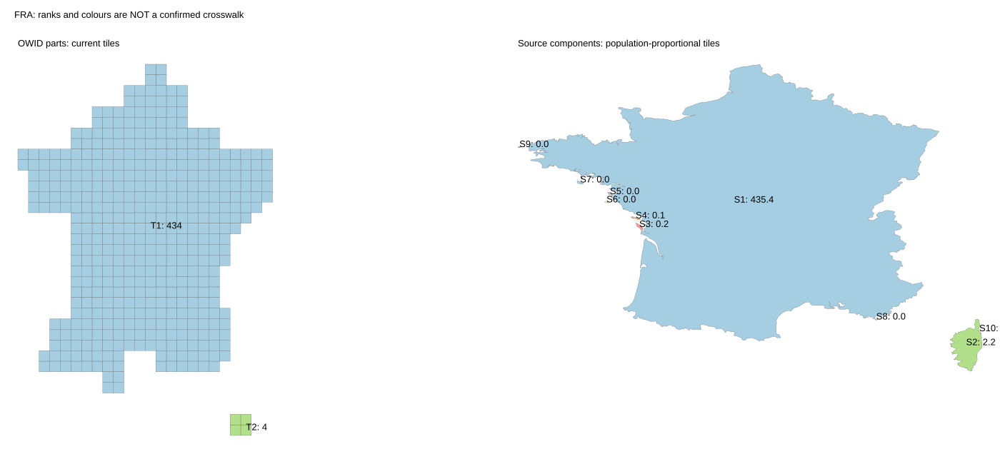
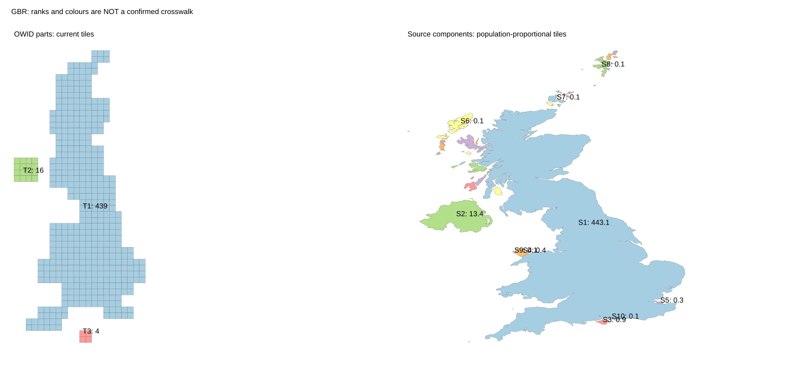
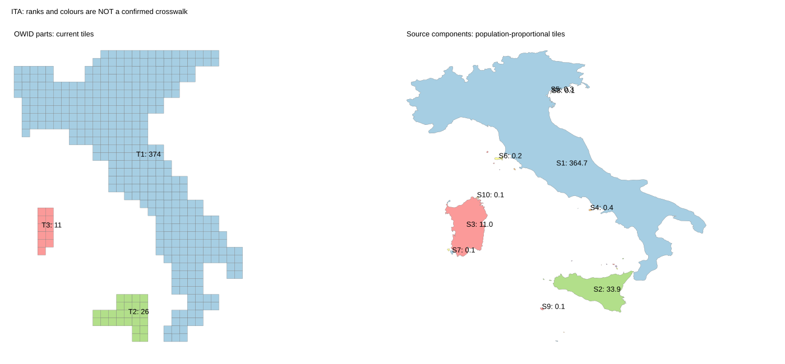
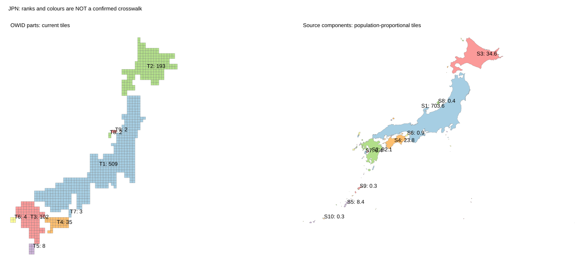
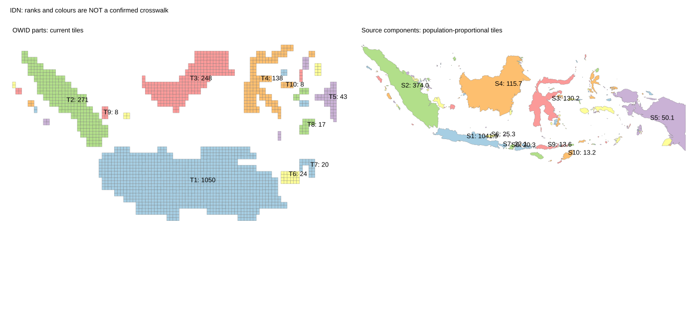

Audit only. No layout, population mapping, or H3-MON export has changed.
Keep each OWID country's total tile count. Multiply that total by each source component's share of the matched Kontur population. This gives a fractional tile quota. The full CSV also gives integer budgets from the largest-remainder rule. There is no minimum island tile in this calculation.
| Component | OWID tiles | Kontur quota | Assessment |
|---|---|---|---|
| Corsica | 4 | 2.2 | Small correction candidate |
| Isle of Wight | 4 | 0.9 | Small correction candidate |
| Northern Ireland | 16 | 13.4 | Small correction; check nearby island grouping |
| Sicily | 26 | 33.9 | Needs more tiles, not fewer |
| Sardinia | 11 | 11.0 | Little change needed |
| Honshu | 509 | 703.6 | Large correction |
| Hokkaido | 193 | 34.6 | Large correction |
| Kyushu | 102 | 82.1 | Not a small boundary edit |
| Shikoku | 35 | 23.8 | Substantial relative change |
| Java | 1050 | 1041.9 | Close to its quota |
| Sumatra | 271 | 374.0 | Large correction |
| Indonesian Borneo | 248 | 115.7 | Large correction |
| Sulawesi | 138 | 130.2 | Smaller correction |
These identities were checked against the side-by-side shapes and positions. They are not a complete approved crosswalk. Quotas refer to individual source components. Nearby small islands have not yet been assigned to represented groups. Those assignments can change the final budgets.
A small local correction is useful for some countries, but it cannot make the whole OWID map population-exact by island. Start with Corsica: test moving two tiles to mainland France after assigning the remaining small components. Keep the shapes fixed elsewhere. Do not reshape Japan or Indonesia as part of this small trial.
Country inventory · OWID detached pieces · All source quotas and integer budgets · Reviewed example identities · Input hashes and limits





United States · Canada · Russia · Malaysia · Philippines · Greece